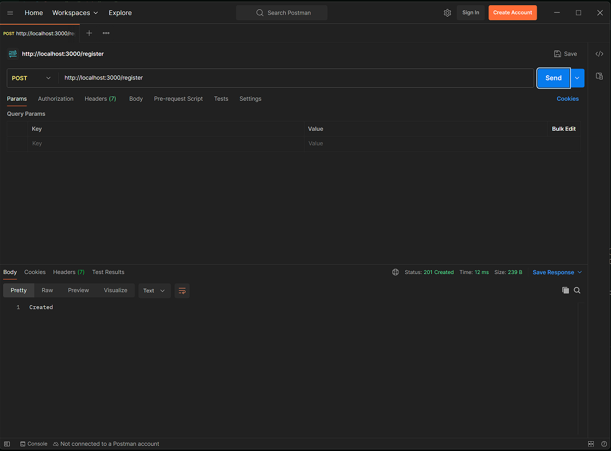

What Is
Postman is an invaluable piece of software that is used by programmers to test their HTTP request(s) for validity. According to the Postman Website, "Postman is an all-in-one API platform for building and working with APIs. It takes the pain out of every stage of the API lifecycle—from designing and testing to delivery and monitoring. Built for teams, Postman makes it easy to collaborate, stay organized, and build secure, reliable APIs faster".
Once you download Postman and install it, you can test different HTTP request types and different parameters for functionality. Here are some of the Postman references:
Postman
